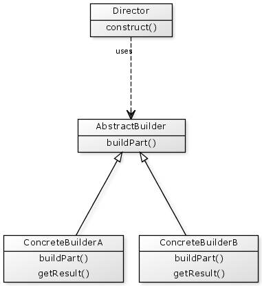
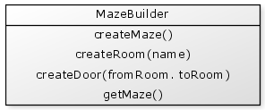
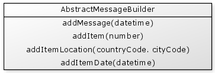
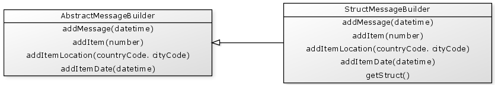
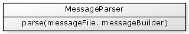
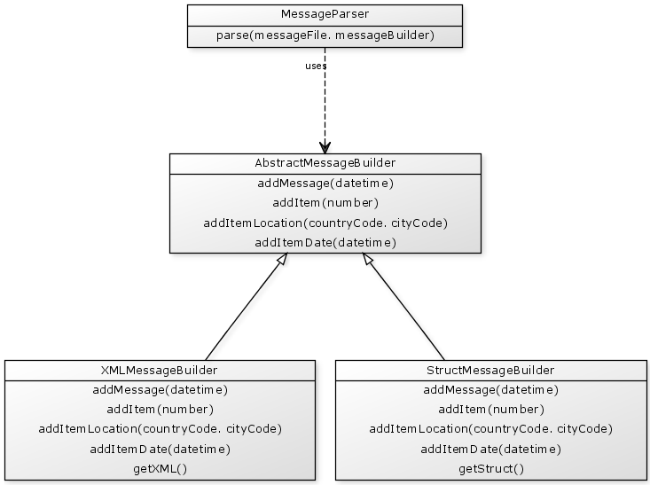

An example construct() function may have code such as
{% highlight cfm %}We may also have multiple kinds of builders that may all be used with the same Director object. In this case we need all of the builders to have exactly the same set of build functions.

In this diagram we have:
- The Director, which contains the steps required to build a product.
- An AbstractBuilder, which provides empty functions that do nothing and may be overridden in the real Builders.
- Two different builder implementations; ConcreteBuilderA and ConcreteBuilderB, that are real builder objects that implement the functions in the Abstract Builder. They also return the result of the build steps.
Within CFML The Abstract Builder does not necessarily need to be created but serves as a reference of the builder functions as well as providing an 'empty' version of each function.
Let's take a look at some examples of a Builder.
Example: Creating a fast food children's meal
In a fast food restaurant it is common to have a children's meal made up of:
- a main item,
- a side item,
- a drink, and
- a toy
We can create a Cashier that is responsible for putting all of these items together:
{% highlight cfm %}There may be a few different types of special kids meals. For example, we may have a Robot kids meal that consists of a Robot shaped burger, fries, a blue drink and a robot toy. Another kind of meal may be a Princess kids meal that consists of a Nuggets, fries, a pink drink and a princess toy.
We can create a RobotMealBuilder and a PrincessMealBuilder that each implement the four required functions. So to create these two meals we could write:
{% highlight cfm %}Example: Creating a maze
Consider that you are building some software to construct a maze that is made up of rooms that are connected by doors. In this case we can create a maze builder object that knows how to create a maze then add rooms and doors.
Let's create a trivial "maze" that has the following layout:
{% highlight text %} |-------|-------| | | | | A # B | | | | |------- ---#---| | | | | C # D | | | | |-------|-------| {% endhighlight %}In this diagram we have four rooms labelled A, B, C and D.
The # symbols represent doors, so we have doors from:
- A to B,
- B to D, and
- C to D
We can create a MazeBuilder that knows how to create the individual parts of our maze:

Our functions are:
- createMaze() creates a new empty maze
- createRoom() creates a room with the specified name
- createDoor() creates a door from one room to another. An error would be thrown if the rooms were not adjacent.
- getMaze() returns the completed maze.
Let's now create a MazeGameCreator object that creates mazes:
{% highlight cfm %}To use our MazeGameCreator we can write:
{% highlight cfm %}Example: Parsing complex text files (Advanced)
Consider a system that tracks all of the locations of a package throughout a journey from its origin to destination. This tracking system may not have been developed by you and you simply receive a complex data file that contains all of the relevant tracking information. This complex data file may have a complicated format as follows.
{% highlight text %} MGS+20091204+1623 ITS+1024123 LOC+AU+SYD DTM+20091201+0903 LOC+AU+MEL DTM+20091202+1125 ITE ITS+8765453 LOC+AU+SYD DTM+20091201+1021 LOC+NZ+WEL DTM+20091203+1355 LOC+NZ+AUK DTM+20091204+1123 ITE MGE {% endhighlight %}(This is a very simplified mock file format with a similar concept to a format such as EDIFACT)
In our mock example, these cryptic tags mean the following:
- MGS = Message Start, followed by a date and time that the message was generated
- MGE = Message End
- ITS = Item Start, followed by an unique item number
- ITE = Item End
- DTM = Date and time that an item was processed
- LOC = Location that an item was processed, followed by country code and city code
So we can see that this is a message with two items of data. The first item was processed at two locations; Sydney and Melbourne. The second item was processed at three locations; Sydney, Wellington and Auckland.
Creating a Message Builder
A Builder may be useful in helping us convert this file into a more usable representation. Lets create an object called an AbstractMessageBuilder.

In this example:
- addMessage() indicates the start of a new "message".
- addItem() indicates that a new item was found.
- addItemLocation() indicates a location where the item was processed
- addItemDate() indicates the date and time the item was at a location
This AbstractMessageBuilder really just represents the functions required in a builder. We now need to create an actual builder that implements these functions. Let's create a StructMessageBuilder that extends the AbstractMessageBuilder and is designed to creates a simple struct version of the input message data.
In our StructMessageBuilder we implement each of the functions above, but we also add in an extra function getStruct() which returns the final result.
Our AbstractMessageBuilder may also have internal logic to ensure that the build steps were processed in a valid order, and perhaps throw exceptions if a valid order was not followed.
So at this point we now have:

Now suppose that our requirement changed and we needed the builder to return a different format from our simple struct. Perhaps we need it to return an XML object instead. In this case we just create different builder object that caters to this new requirement.
Let's create an XMLMessageBuilder that had extends the AbstractMessageBuilder, but instead has a getXML() function that returns an XML object.

Because these alternative builder objects all have exactly the same functions then they can easily be substituted for one another without changing the calling code that reads the actual data file.
Creating a Message Parser
Let's create a Message Parser object that will make use of our builder code

For this example we pass the input data file path and whichever builder is required to the parse() function.
{% highlight cfm %}To use our message parser we may write:
{% highlight cfm %}If we wanted to process the file and get an XML file, we just swap in the XMLMessageParser:
{% highlight cfm %}So the MessageParser object, which is responsible for reading the input file and calling the appropriate functions on the builder, remains unchanged and independent of the resulting representation of the output.
UML diagram
Following is a UML diagram of out Message Parser and Builder objects.

References
Builder Pattern
http://en.wikipedia.org/wiki/Builder_pattern/
Builder Design Pattern
http://sourcemaking.com/design_patterns/builder/
Builder Pattern
http://www.oodesign.com/builder-pattern.html